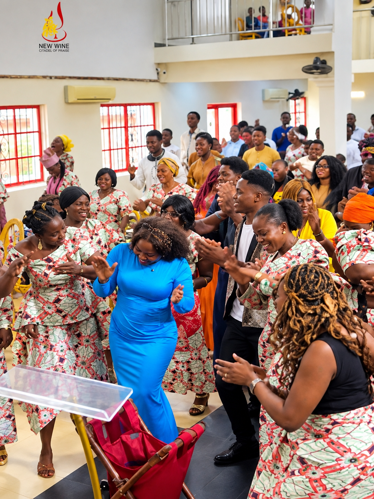

WELCOME TO NEW WINE CITADEL OF GLORY CHURCH
A place where faith grows through the word, Miracles happen through his Praise and where everyone can experience the love of God
FIND A BRANCH
📍 12 Olubummi Sanyaolu street, off prince bustop Ijegun, Ikotun, Lagos
🕐 Sunday Service: 7:00 AM
📍 Da vogue event center off Ijegun road Ikotun Lagos.
🕐 Sunday Service: 9:00 AM
📍 Church address goes here
🕐 Sunday Service: 8:00 AM
📍 Church address goes here
🕐 Sunday Service: 8:00 AM
📍 Church address goes here
🕐 Sunday Service: 8:00 AM
📍 Church address goes here
🕐 Sunday Service: 8:00 AM
WHO WE ARE

WELCOME TO New wine citadel of Glory Church
We are a community of believers committed to growing in faith, serving others through HIS WORD and sharing the love of Christ.
Our church is a place where people can connect with God, build meaningful relationships and discover their purpose.
GET INVOLVED
Leading the church into meaningful worship and praise through music.
Helping young and old people discover their faith, purpose and identity in Christ.
Creating a fun and engaging environment where children can learn about God.
Coming together in prayer and seeking God's presence and direction.
Serving with excellence by welcoming, guiding and assisting members and guests during church services and events.
Supporting worship and church services through professional sound management and audio production.
Capturing and sharing the message of the church through photography, video, projections, livestreaming and digital media.
WATCH & LISTEN
SPECIAL MESSAGES
Discover the importance of prayer and developing a consistent prayer life.
Watch on Facebook →HAVE A QUESTION?
Whether you have a question, need prayer, or simply want to connect with us, feel free to reach out.
You can visit any of our branches for counselling and Consultation
Snr.Pastor +234 802 345 5659
info@yourchurch.com
CONNECT WITH US
Stay Connected
Follow us online and stay updated with our latest services, messages and events.◎ Follow us on Instagram